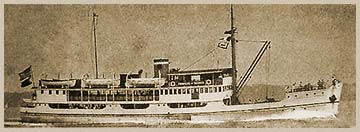

|
j
a v a s c r i p t |
January 14, 1944
"Board to Probe Charges against Constabulary Men.... Mercenary Officers in city to be purged from organization — at least 12 members under suspension." Someone's aroused, at last. Primco has been quiet as a mouse about this month's ration of sugar, soap, lard and matches. One step in the right direction is a daily ration of 120 grams of camote to supplement the 120 grams rice ration. La Vanguardia: "British worried at announced advance of Bose's army." Don't laugh, please. Teodoro the Great said that 90 remain out of 187 that began the training course, "despite the fact you're not supposed to quit." An exam was held to qualify students for four weeks of practical training on a ship in Philippine waters. "Only ten passed; the majority flunked on purpose [including our hero], having U.S. submarines in mind." Another P.I. inter-island steamer was sunk recently — December 15, I think. The U.S. sub allowed the crew of the Dos Hermanos (Maritima Line) to leave the ship, before sinking it with torpedoes. The captain is in Manila now. This practically accounts for all the real ships we had at the start. Only the damaged Princess Negros remains.

Princess of Negros
Word persists that the Japanese began attacking Panay Island on January 10 after the people refused to come down from the mountains. Reports speak of many deaths. Batels are prohibited from sailing the waters off Cebu and a few other islands. |
|
|
|
|